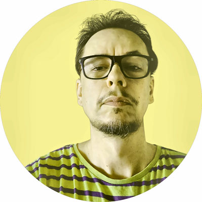
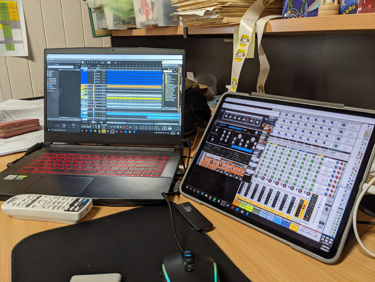
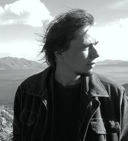
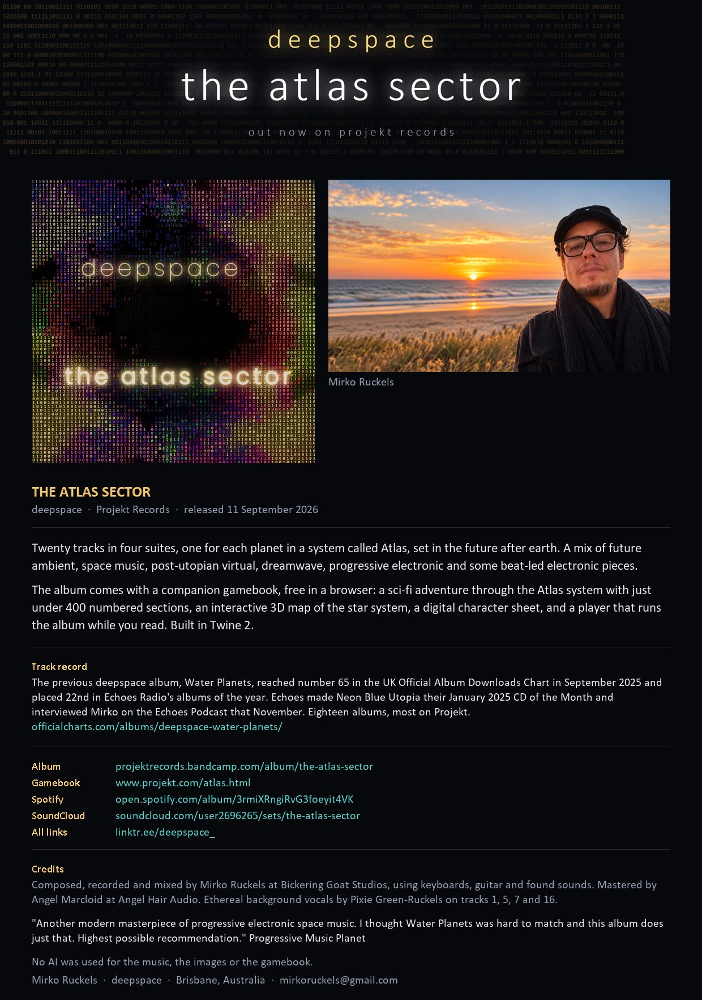
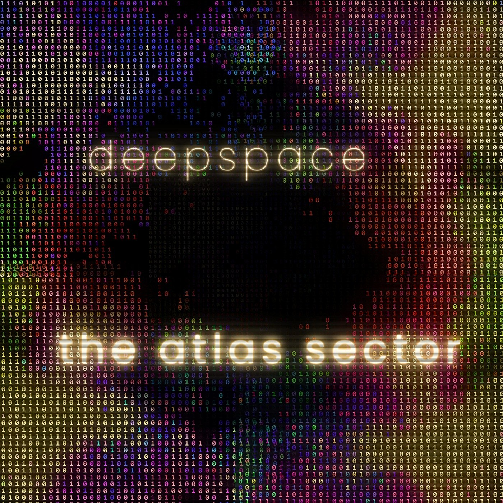
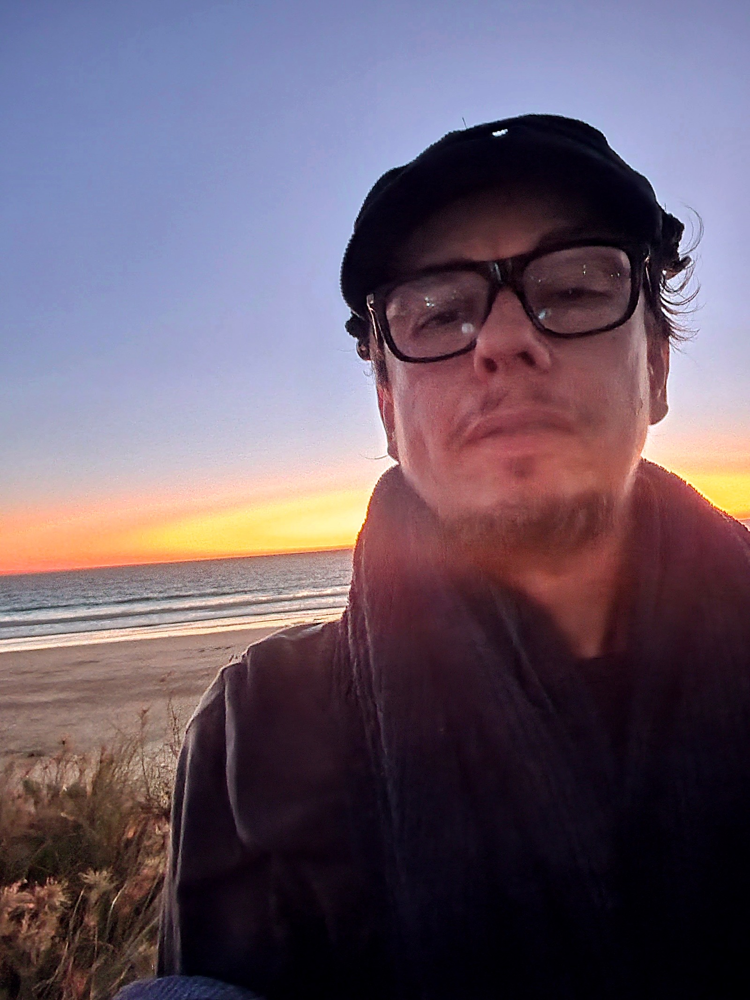
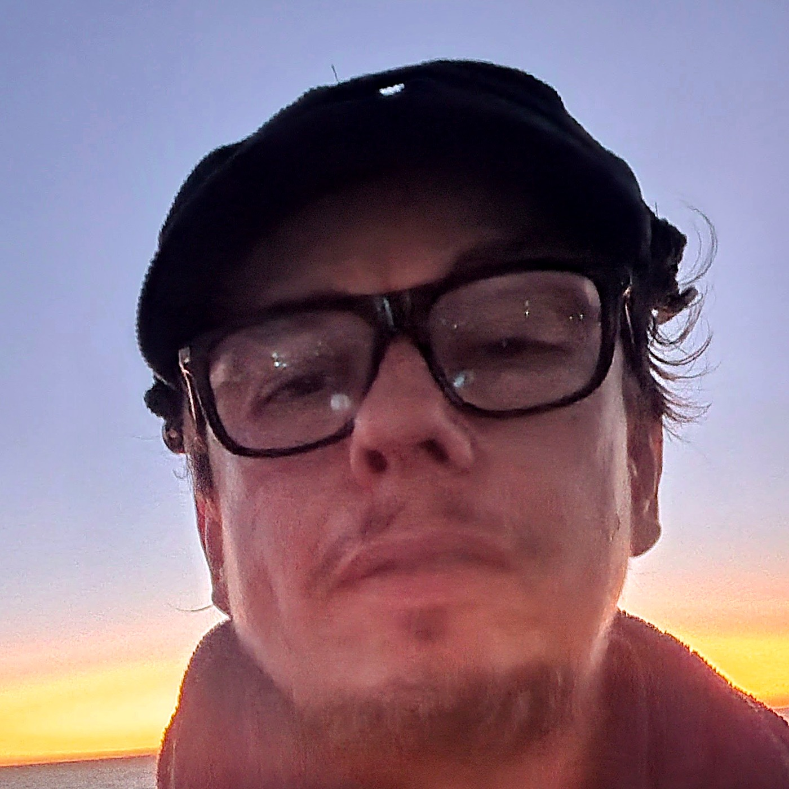
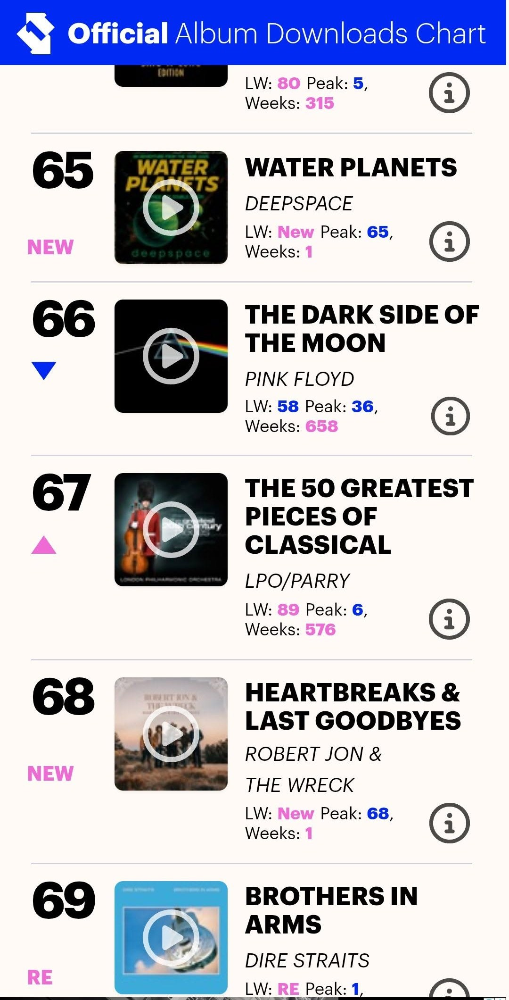

story
-
The Atlas Sector gamebook An interactive sci-fi adventure that goes with the album
-
Water Planets booklet The album’s story, a 29-page PDF
-
The Blue Dunes A short science fiction story, as a PDF
ambient music
deepspace is the ambient project of Mirko Ruckels, a German-French musician living in Brisbane, Australia.
Since 2007 he has made slow, spacious and dream-like music from synthesizers, software and acoustic instruments. The music evokes this and other worlds, filled with empty spaces, night cities, deserts, deep oceans and strange phenomena.
His albums are released on Projekt Records and independently.
Bandcamp Spotify YouTube Projekt
 Can you tell me what I am seeing? It’s vast and moving slowly…Sep 2026
Can you tell me what I am seeing? It’s vast and moving slowly…Sep 2026
 Watch the sun rise from space…Sep 2026
Watch the sun rise from space…Sep 2026
 Take a 35 minute walk into a transforming endless desertSep 2026
Take a 35 minute walk into a transforming endless desertSep 2026
 The feeling of rushing through space…Sep 2026
The feeling of rushing through space…Sep 2026
 BlueHeavenAbyss (Theme from Water Planets)Oct 2025 · Arrangement video
BlueHeavenAbyss (Theme from Water Planets)Oct 2025 · Arrangement video
 Vertical Automated ParkingJun 2025 · from Neon Blue Utopia
Vertical Automated ParkingJun 2025 · from Neon Blue Utopia
 Floor 426-BJan 2025 · from Neon Blue Utopia
Floor 426-BJan 2025 · from Neon Blue Utopia
 Sunny Hypnagogia HeightsJan 2025 · from Neon Blue Utopia
Sunny Hypnagogia HeightsJan 2025 · from Neon Blue Utopia
 Entering Aquarium PrefectureJan 2025 · from Neon Blue Utopia
Entering Aquarium PrefectureJan 2025 · from Neon Blue Utopia
 Bubble Echolalia DistrictJan 2025 · from Neon Blue Utopia
Bubble Echolalia DistrictJan 2025 · from Neon Blue Utopia
 Just a Pill and All this will EndJan 2025
Just a Pill and All this will EndJan 2025
 Parkour on Lazarus HeightsJan 2025 · from Neon Blue Utopia
Parkour on Lazarus HeightsJan 2025 · from Neon Blue Utopia
 Utopia=VisionsJan 2025 · from Neon Blue Utopia
Utopia=VisionsJan 2025 · from Neon Blue Utopia
 Rainy Megacity 7 PrecinctDec 2024 · from Neon Blue Utopia
Rainy Megacity 7 PrecinctDec 2024 · from Neon Blue Utopia
 Considering the Loss of the Organic (Smoo's Capsule)Mar 2024 · video version
Considering the Loss of the Organic (Smoo's Capsule)Mar 2024 · video version
 Considering the Loss of the Organic (Smoo's Capsule)Mar 2024
Considering the Loss of the Organic (Smoo's Capsule)Mar 2024
 HyperdriveEngageMar 2024 · from The Black Orchid Galaxies
HyperdriveEngageMar 2024 · from The Black Orchid Galaxies
 In the Hydroponic Garden SectorMar 2024 · from The Black Orchid Galaxies
In the Hydroponic Garden SectorMar 2024 · from The Black Orchid Galaxies
 The Great Sea of BrachychitonJan 2024
The Great Sea of BrachychitonJan 2024
 Enveloped in Green and BlueJan 2024
Enveloped in Green and BlueJan 2024
 O Radiant Bee! (The Arboretum)Nov 2023 · from The Architecture of Flowers
O Radiant Bee! (The Arboretum)Nov 2023 · from The Architecture of Flowers
 Dreaming StalksOct 2023 · from The Architecture of Flowers
Dreaming StalksOct 2023 · from The Architecture of Flowers
 InflorescenceOct 2023 · from The Architecture of Flowers
InflorescenceOct 2023 · from The Architecture of Flowers
 Emptiness (excerpt)Oct 2022 · from The Blue Dunes
Emptiness (excerpt)Oct 2022 · from The Blue Dunes
 An Unexpected Shelter (excerpt)Oct 2022 · from The Blue Dunes
An Unexpected Shelter (excerpt)Oct 2022 · from The Blue Dunes
 The Blue Dunes (excerpt)Oct 2022 · from The Blue Dunes
The Blue Dunes (excerpt)Oct 2022 · from The Blue Dunes
 Do You Hear Faint Music?Apr 2022 · from Superradiance
Do You Hear Faint Music?Apr 2022 · from Superradiance
 Interlude: Hope for Early Microbial FormsMar 2022
Interlude: Hope for Early Microbial FormsMar 2022
 Leaving EarthMar 2022 · from Superradiance
Leaving EarthMar 2022 · from Superradiance
 et fluxDec 2021 · with theAdelaidean
et fluxDec 2021 · with theAdelaidean
 DawnNov 2021 · with theAdelaidean
DawnNov 2021 · with theAdelaidean
 SolOct 2012 · fan video by Solaris Protectorate Order · from The Barometric Sea
SolOct 2012 · fan video by Solaris Protectorate Order · from The Barometric Sea
 Another Empty GalaxyOct 2012 · fan video by Solaris Protectorate Order
Another Empty GalaxyOct 2012 · fan video by Solaris Protectorate Order
 The Barometric SeaOct 2012 · fan video by Solaris Protectorate Order
The Barometric SeaOct 2012 · fan video by Solaris Protectorate Order
 Leaving the HubOct 2012 · fan video by Solaris Protectorate Order
Leaving the HubOct 2012 · fan video by Solaris Protectorate Order
 ElevenwardJul 2012 · fan video by Solaris Protectorate Order · from The Glittering Domain
ElevenwardJul 2012 · fan video by Solaris Protectorate Order · from The Glittering Domain
 Sky Inside the MindJul 2012 · fan video by Solaris Protectorate Order
Sky Inside the MindJul 2012 · fan video by Solaris Protectorate Order
 In the Outer ReachesJul 2012 · fan video by Solaris Protectorate Order
In the Outer ReachesJul 2012 · fan video by Solaris Protectorate Order
 EuphandemoniumAug 2008 · fan video by Blinx636
EuphandemoniumAug 2008 · fan video by Blinx636
The last eight are fan-made videos set to deepspace music, with thanks to the people who made them.


Projekt Records press photos, 2022

deepspace is the ambient project of Mirko Ruckels, a German-French musician living in Brisbane, Australia. Since 2007 he has made slow, spacious and dream-like music from synthesizers, software and acoustic instruments. His albums are released independently and on Projekt Records.
The newest album, The Atlas Sector, came out on Projekt Records on 11 September 2026 (ARC399). It has twenty tracks in four suites, one for each planet in a system called Atlas, and comes with a free companion gamebook that plays in a browser.
Composed, recorded and mixed by Mirko Ruckels at Bickering Goat Studios. Mastered by Angel Marcloid at Angel Hair Audio. No AI was used for the music, the images or the gamebook.




